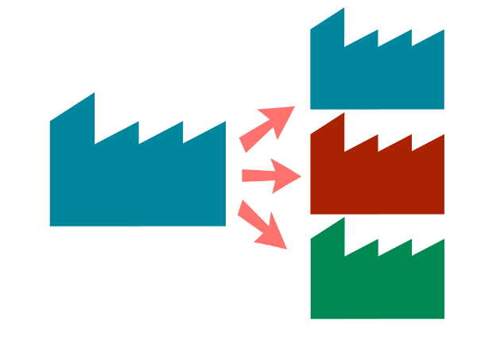
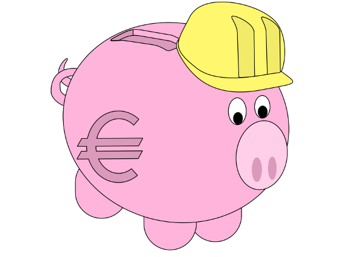
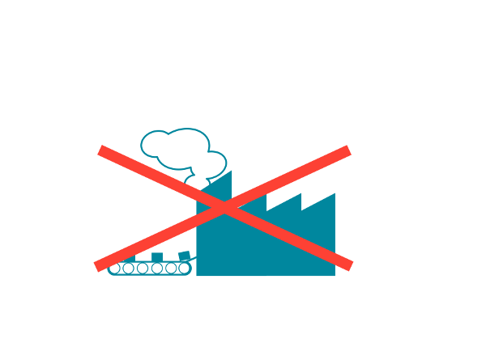
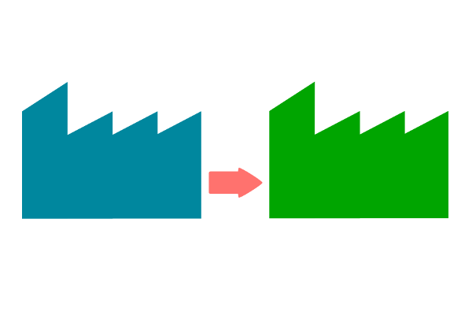
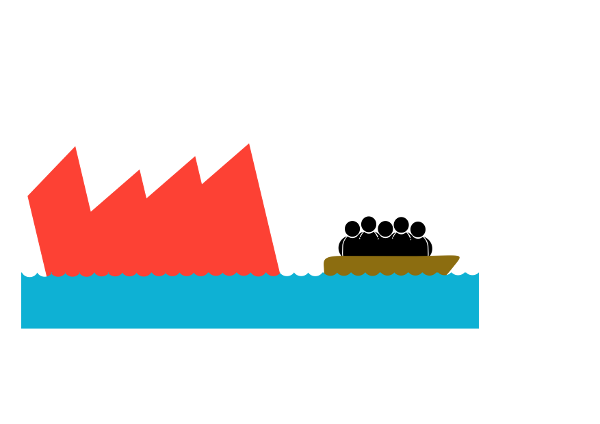

Modelo de Lengnick-Hall
Productividad bajas expectativas de crecimiento y alta preparación en materia de RRHH
En este caso la organización apuesta por un crecimiento moderado basado en una posición competitiva fuerte gracias a la eficiencia de sus RRHH. Existen al menos cuatro posibilidades.
 Mejorar sus competencias distintivas para fortalecer su posición frente a otras empresas.
Mejorar sus competencias distintivas para fortalecer su posición frente a otras empresas.- Diversificarse hacia negocios con alto potencial de crecimiento basados en competencias que la empresa posee actualmente.
- Invertir los beneficios en prevención de posibles cambios futuros.
- Cambiar de negocio hacia donde sus RRHH puedan ser empleados.

Redirección bajas expectativas de crecimiento y bajas preparación en materia de RRHH
Antes de tomar alguna decisión debe de realizarse un análisis detallado de las competencias de los RRHH de la empresa para detectar competencias aprovechables y los potenciales de empleabilidad de los trabajadores, para así intentar desarrollar eficazmente sus recursos y capacidades.
Si aun después de haber realizado ese análisis las oportunidades de mejorar son bajas la empresa tienen dos líneas de actuación:
- la reconversión (reestructurar completamente el negocio)
- o la salida de la industria (abandonar el negocio).